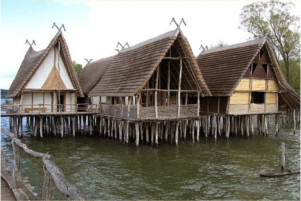

Exkursionen
Hier möchten wir euch einen kleinen Überblick über die Exkursionen, die wir am Freitag anbieten, geben. Treffen werden wir uns dafür um 8 Uhr (bestimmte Gruppen etwas früher) auf der Terrasse vor dem P-Gebäude. Denkt bitte für die Exkursionen in die Schweiz (Kreuzlingen, Leibstadt und Winterthur) an euren Personalausweis! Die Zuordnung zu eurer Exkursion solltet ihr ein paar Tage vor dem Start der ZaPF erhalten.
Vorweg eine Anleitung:
Es wird folgende Exkursionen geben:
- PSI (CH)
- KKW (CH)
- Technorama (CH)
- Pfahlbauten (Unteruhldingen)
- Ruppaner und Klärwerk (KN)
- ISC und Stadtführung (KN)
- Airbus und Dornier (Friedrichshafen)
- Zeppelin und Dornier (Friedrichshafen)
- Simulink Workshop (Uni)
Die Doppelexkursionen hängen fest zusammen. Jetzt weitere Infos:
Airbus
Ihr kennt natürlich alle Airbus, die Firma, welche vor allem für ihre Flugzeuge (z. B. der A400M) bekannt ist. Aber Airbus entwickelt auch Systeme für die Raumfahrt und ist ein Waffenhersteller. Das Werk in Friedrichshafen ist ein großer Standort, der Satelliten entwickelt und diese baut. Wir bieten euch eine Führung, in der wir unter anderem Einblicke ins "Space-Integration-Center" bekommen.
Dornier Museum
Wen über 100 Jahre Luft- und Raumfahrtgeschichte interessieren, sollte das Dornier-Museum besuchen. In Friedrichshafen (Anfahrt mit der Fähre!) bekommt ihr hier eine geballte Ladung Informationen zu diesem Thema, mit 400 Exponaten von denen 12 Originale Flugzeuge sind. Des weiteren können wir hier eine spezielle Führung machen, die noch Einiges vertieft.

Zeppelin
Bestimmt bekommt ihr sie auch mal zu sehen: die berühmten Zeppeline vom Bodensee. In Friedrichshafen gibt es sogar ein extra Museum für sie. Hier erfahrt ihr etwas über die Geschichte des Zeppelins und die Kultur drumherum.
Pfahlbautenmuseum
 Wenn man von der Uni nach Nord-Ost über den See schaut, kann man den Ort Unteruhldingen erahnen. In einem der größten Freilichtmuseen Deutschlands kann man hier 23 Pfahlbauten aus der Stein- und Bronzezeit besuchen. Die Häuser bieten viele Informationen zu den Lebensweisen vor 4.000 Jahren, zum Teil wurden Einrichtungsgegenstände nachgebaut und die Häuser damit "möbliert". Nähere Infos gibt es hier, die Anreise erfolgt mit der Fähre und anderen öffentlichen Verkehrsmitteln.
Technorama
Nach einer einstündigen Fahrt mit einem gemieteten Bus kommt ihr zum Technorama in Winterthur. Es ist die unter Physikern, die im Kreis Konstanz ihr Abi gemacht haben, die bekannteste naturwissenschaftliche Einrichtung in der Nähe. Mindestens ein Ausflug während der Schulzeit war absolutes Muss! Das Technorama ist ein interaktives Museum mit tausenden von kleinen und großen Versuchen zum Anfassen rund um sämtliche physikalische Phänomene. Es stellt somit einen riesen Spielplatz für Physiker dar. Extra für euch bietet das Technorama verschiedene kleine Führungen zum Thema Supraleiter und vielem mehr an.
KKW Leibstadt
Etwas ganz Besonderes bieten wir euch mit dem Kernkraftwerk Leibstadt. Mit 36 Personen können wir hier die sogenannte kontrollierte Zone (Maschinenhaus und Reaktorgebäude) besuchen. Die Hinfahrt dauert ca. 2 Stunden, ein kleines Mittagessen wird es direkt im AKW geben. Die Führung wird ca. 4 Stunden dauern.
PSI
Im Paul-Scherrer-Institut in Leibstadt wird rund ums Thema Kernkraft geforscht. Rund 200 Forscher arbeiten hier eng mit der ETH Zürich zusammen. Die Themenschwerpunkte sind dabei Nukleare Energie und vor allem Sicherheit von Reaktoren, Entsorgung und vielem mehr.
Anfängerpraktikum und Fortgeschrittenenpraktikum
Sogar für ZaPFika, für die ein Weg von über einer Minute zu viel ist, haben wir ein Programm aufgestellt: Wen das durchaus umfangreiche Physikalische Praktikum unserer Uni interessiert, der kann sich hier anmelden.
Ruppaner-Brauereiführung
 Wer nach dem Abendprogramm am Abend vorher schnell ein Konterbier braucht, der macht bei dieser Exkursion alles richtig. Die Ruppaner-Brauerei bietet direkt in Konstanz (Anfahrt mit dem Stadtbus) eine sehr informative Führung, die alles rund ums Bier beinhaltet. Zum Schluss wird es natürlich noch eine Verkostung geben. Da ist es natürlich gut, dass alles direkt in Konstanz liegt und wir wahrscheinlich die Stadtbusse benutzen können.
Wer nach dem Abendprogramm am Abend vorher schnell ein Konterbier braucht, der macht bei dieser Exkursion alles richtig. Die Ruppaner-Brauerei bietet direkt in Konstanz (Anfahrt mit dem Stadtbus) eine sehr informative Führung, die alles rund ums Bier beinhaltet. Zum Schluss wird es natürlich noch eine Verkostung geben. Da ist es natürlich gut, dass alles direkt in Konstanz liegt und wir wahrscheinlich die Stadtbusse benutzen können.
ISC
Im International Solar Energy Research Center in Konstanz wird wie der Name schon sagt, an Solarzellen geforscht. Für den Besuch wird es einen 20-minütigen Vortrag über Photovoltaik und eine anschließende Führung durchs Labor geben, in der ihr einiges über die Herstellung und Charakterisierung von Solarzellen lernt.
Stadtführung
Ihr wollt mehr über Konstanz und seine Geschichte erfahren? Außerdem stört euch ein Marsch quer durch unsere wunderschöne Stadt nicht? Dann ist diese sehr informative Führung genau das Richtige für euch.
Klärwerk
Da die Stadt Konstanz Führungen in ihrem Klärwerk anbietet (für Physiker sogar vom Chef) dachten wir, dass ein Ausflug hierhin bestimmt sehr interessant ist.
Simulink Workshop
Am Ende noch etwas besonderes: Ein Programmier-Workshop zum kennenlernen von RasPi und Co. Das schreibt uns der Referent:
Im Rahmen des Workshops steuern Sie populäre Low-Cost Hardware an und programmieren diese als Embedded System. Sie erleben die integrierte Unterstützung für Entwicklung, Test und Ausführung von Simulink-Modellen auf Raspberry Pi und LEGO MINDSTORMS. Sie sammeln an einfachen, praktischen Anwendungen aus Bereichen wie Regelungstechnik, Robotik, Signalverarbeitung und Computer Vision Erfahrung im Umgang mit einer kostengünstigen Hard- und Softwarelösung. In kleinen Gruppen arbeiten Sie mit Simulink und der Hardware, entwerfen Modelle, generieren hieraus auf Knopfdruck Code und führen diesen auf Raspberry Pi und LEGO MINDSTORMS aus.